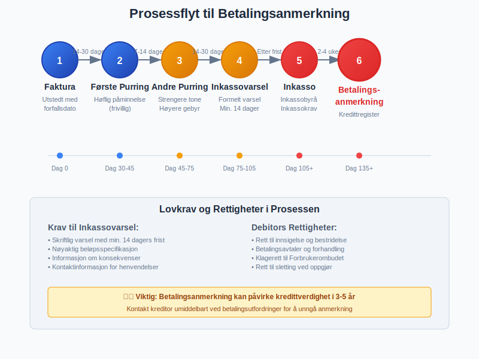
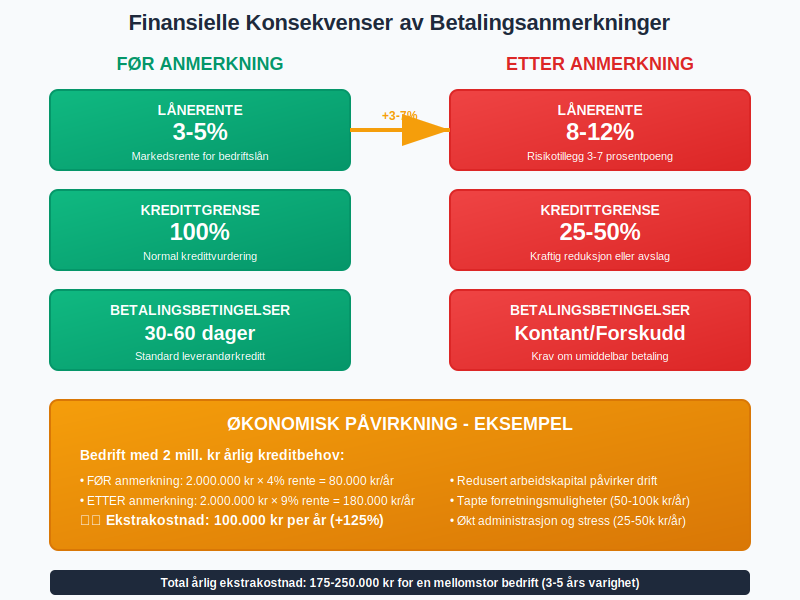
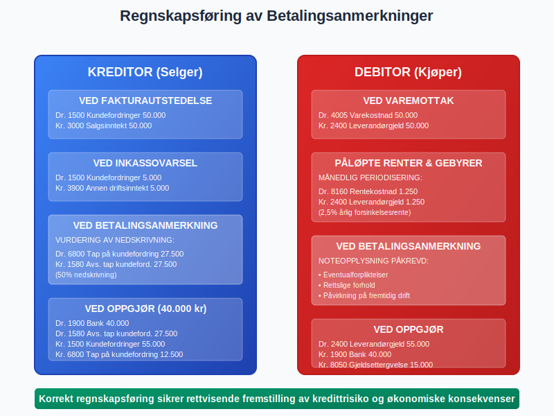
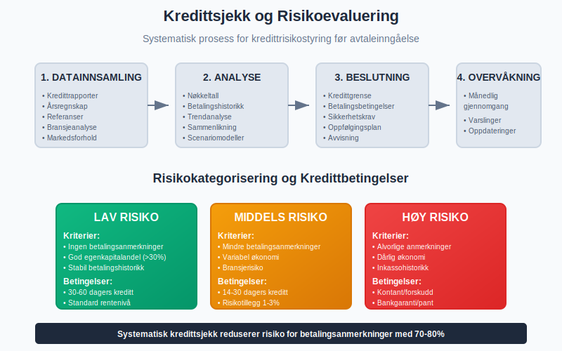
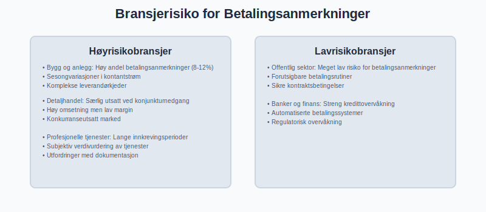
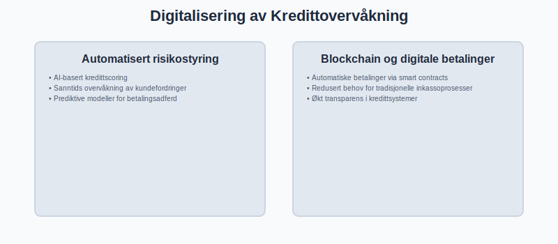

Betalingsanmerkning er en offentlig registrering av betalingsmislighold som får alvorlige konsekvenser for en virksomhets eller persons kredittverdighet. I norsk regnskap og kredittvurdering er betalingsanmerkninger et kritisk signal til markedet om manglende betalingsevne og representerer sluttstadiet i inkassoprosessen. For regnskapsførere og bedriftseiere er forståelse av betalingsanmerkninger essensielt for effektiv kredittrisikostyring og arbeidskapitalstyring.
Man kan også konsultere Gjeldsregisteret for informasjon om gjeld som ikke nødvendigvis fører til betalingsanmerkning, men som er relevant for en helhetlig kredittrisikostyring.
Dersom kravet fortsatt ikke dekkes etter betalingsanmerkning og gjeldsregister-registrering, kan Namsmannen iverksette tvangsfullbyrdelse for å kreve inn kravet.
Seksjon 1: Definisjon og Juridisk Grunnlag
Betalingsanmerkning er en offentlig merknad som registreres i kredittopplysningsdatabaser når en forfalt kundefordring ikke er betalt etter at inkassovarsel er sendt og rettslige frister er utløpt. Registreringen skjer i henhold til inkassoloven og personopplysningsloven, og representerer en form for offentlig varsel om manglende betalingsevne.
Juridiske Rammer for Betalingsanmerkninger
Betalingsanmerkninger i Norge er regulert av:
- Inkassoloven (1988): Definerer prosessen for inkasso og registrering av betalingsanmerkninger
- Personopplysningsloven/GDPR: Regulerer behandling og lagring av kredittopplysninger
- Kredittopplysningsloven: Styrer virksomhet til kredittopplysningsforetak
- Forbrukerkjøpsloven: Beskytter forbrukere i kredittsammenheng

Seksjon 2: Prosessen frem til Betalingsanmerkning
Veien fra ubetalt faktura til betalingsanmerkning følger en strukturert prosess som er lovregulert for å beskytte både kreditor og debitor.
Detaljert Prosessoversikt
| Trinn | Handling | Tidsramme | Lovkrav |
|---|---|---|---|
| 1. Faktura | Utstedes med forfallsdato | Vanligvis 14-30 dager | Bokføringsforskriften |
| 2. Første purring | Høflig betalingspåminnelse | 7-14 dager etter forfall | Frivillig |
| 3. Andre purring | Strengere tone, høyere gebyr | 14-30 dager etter første | Inkassoloven § 10a |
| 4. Inkassovarsel | Formelt varsel om inkasso | Min. 14 dagers frist | Inkassoloven § 3 |
| 5. Inkassokrav | Overføring til inkassobyrå | Umiddelbart etter frist | Inkassoloven |
| 6. Betalingsanmerkning | Registrering ved manglende betaling | 2-4 uker etter inkasso | Kredittopplysningsloven |

Krav til Inkassovarsel
For at en betalingsanmerkning skal være gyldig, må inkassovarselet oppfylle spesifikke lovkrav:
- Skriftlig varsel med minimum 14 dagers betalingsfrist
- Nøyaktig beløpsspecifikasjon inkludert hovedstol, renter og gebyrer
- Informasjon om konsekvenser ved manglende betaling
- Kontaktinformasjon for spørsmål og innsigelser
- Referanse til originalfaktura og tidligere påminnelser
Seksjon 3: Typer Betalingsanmerkninger
Betalingsanmerkninger kan klassifiseres etter ulike kriterier som påvirker deres alvorlighetsgrad og konsekvenser for debitors kredittverdighet.
Klassifisering etter Beløpsstørrelse
| Type | Beløpsgrense | Konsekvenser | Registreringsperiode |
|---|---|---|---|
| Mindre anmerkning | Under 1 000 kr | Begrenset kredittvirkming | 1-2 år |
| Standard anmerkning | 1 000 - 50 000 kr | Betydelig kredittnedsetting | 3 år |
| Alvorlig anmerkning | Over 50 000 kr | Omfattende kredittrestriksjoner | 3-5 år |
Klassifisering etter Type Fordring

Kommersielle fordringer:
- Leverandørgjeld fra næringsdrivende
- Profesjonelle tjenester (advokat, regnskapsfører)
- Fakturaer fra B2B-transaksjoner
Offentlige fordringer:
- Skattegjeld til Skatteetaten
- MVA-gjeld til MVA-registeret
- Kommunale avgifter og gebyrer
Finansielle fordringer:
- Banklån og kredittlinjer
- Kredittkortgjeld
- Forbrukslån
Seksjon 4: Konsekvenser for Bedrifter og Privatpersoner
Betalingsanmerkninger får omfattende konsekvenser som påvirker både daglig drift og langsiktig finansiell planlegging. For regnskapsførere er det viktig å forstå disse konsekvensene for å gi korrekt rådgivning til klienter.
Direkte Finansielle Konsekvenser

Økte finansieringskostnader:
- Høyere renter på lån (ofte 2-5 prosentpoeng økning)
- Krav om større egenkapital ved lånefinansiering
- Reduserte kredittgrenser hos banker og leverandører
Operasjonelle restriksjoner:
- Kontantbetaling kreves fra leverandører
- Kortere betalingsfrister på nye avtaler
- Krav om banksikkerhet eller depositum
Påvirkning på Leverandørforhold
For bedrifter med betalingsanmerkninger endres leverandørforholdet betydelig:
| Område | Før anmerkning | Etter anmerkning |
|---|---|---|
| Betalingsbetingelser | 30-60 dager kreditt | Kontant eller forskudd |
| Kredittvurdering | Automatisk godkjenning | Manuell vurdering |
| Prisvilkår | Standardpriser | Risikotillegg 5-15% |
| Kontraktsvilkår | Standardvilkår | Skjerpede sikkerhetsklausuler |
Seksjon 5: Regnskapsmessig Behandling
Fra et regnskapsperspektiv krever betalingsanmerkninger spesiell oppmerksomhet både for kreditor og debitor. Korrekt regnskapsføring sikrer at finansrapportene gir et rettvisende bilde av virksomhetens finansielle stilling.
Kreditors Regnskapsføring
Ved utstedelse av inkassovarsel:
Debitorkonten opprettholdes inntil endelig oppgjør
Eventuelle inkassokostnader aktiveres som del av fordringen
Ved registrering av betalingsanmerkning:
Vurdering av nedskrivningsbehov for [kundefordringen](/blogs/regnskap/hva-er-kundefordring "Hva er Kundefordring? Komplett Guide til Kundefordringer og Kredittrisiko")
Mulig avsetning for [tap på fordringer](/blogs/regnskap/avsetning "Avsetning i Regnskap - Komplett Guide til Avsetninger og Estimater")

Debitors Regnskapsføring
For debitor påvirker betalingsanmerkninger:
- Forpliktelser: Gjelden øker med forsinkelsesrenter og inkassosalær
- Periodisering: Påløpte renter og gebyrer må periodiseres korrekt
- Noteopplysninger: Vesentlige rettstvister og forpliktelser må opplyses
Tapsavsetninger og Nedskrivninger
Kreditor må kontinuerlig vurdere behovet for tapsavsetninger:
| Situasjon | Nedskrivningsprosent | Begrunnelse |
|---|---|---|
| Nylig inkasso | 10-25% | Økt tapsrisiko |
| Betalingsanmerkning | 25-75% | Betydelig tapsrisiko |
| Juridisk forfølgelse | 75-100% | Høy tapsrisiko |
Seksjon 6: Forebygging og Risikostyring
Forebygging av betalingsanmerkninger krever systematisk kredittrisikostyring og proaktiv kundeoppfølging. Dette er spesielt viktig for bedrifter med omfattende fakturasalg.
Kredittsjekk og Kundeevaluering

Før avtaleinngåelse:
- Kredittrapport fra Bisnode, Experian eller Lindorff
- Vurdering av årsregnskap og nøkkeltall
- Referanser fra andre leverandører
- Vurdering av bransje og markedsrisiko
Løpende overvåkning:
- Månedlig gjennomgang av kundefordringer
- Automatiske varslinger ved betalingsforsinkelse
- Regelmessig oppdatering av kredittgrenser
Effektiv Fakturahåndtering
Forebyggende tiltak:
- Klar og tydelig fakturering med korrekte opplysninger
- Elektronisk fakturering via eFaktura eller elektronisk fakturering
- Systematisk oppfølging av forfallsdatoer
- Rask kontakt ved betalingsforsinkelse
Seksjon 7: Prosedyre for Sletting av Betalingsanmerkning
Sletting av betalingsanmerkninger krever systematisk tilnærming og korrekt dokumentasjon. Prosessen kan være kompleks og tidkrevende, men er avgjørende for gjenoppbygging av kredittverdighet.
Trinn-for-Trinn Sletteprosess

1. Kartlegging av anmerkninger:
- Innhent kredittrapport fra alle relevante register
- Identifiser alle registrerte anmerkninger
- Verifiser beløp og detaljer for hver anmerkning
2. Kontakt med kreditorer:
- Direkte kontakt med originalkreditor eller inkassobyrå
- Forhandling om oppgjør (kan være lavere enn full sum)
- Skriftlig avtale om betaling og sletting
3. Betaling og dokumentasjon:
- Betaling i henhold til avtale
- Innhenting av kvittering og sletteerklæring
- Oppfølging av faktisk sletting i registrene
Kostnad ved Sletting
| Type anmerkning | Typisk oppgjørskrav | Slettingskostnad |
|---|---|---|
| Små beløp | 50-80% av opprinnelig | 500-2 000 kr |
| Standard beløp | 60-90% av opprinnelig | 1 000-5 000 kr |
| Store beløp | 70-100% av opprinnelig | 2 000-10 000 kr |
Seksjon 8: Betalingsanmerkninger i Ulike Bransjer
Forskjellige bransjer har ulike risikoprofiler og utfordringer knyttet til betalingsanmerkninger. Forståelse av bransjespesifikke faktorer er viktig for effektiv risikostyring.
Høyrisikobransjer

Bygg og anlegg:
- Høy andel betalingsanmerkninger (8-12%)
- Sesongvariasjoner i kontantstrøm
- Komplekse leverandørkjeder
Detaljhandel:
- Særlig utsatt ved konjunkturnedgang
- Høy omsetning men lav margin
- Konkurranseutsatt marked
Profesjonelle tjenester:
- Lange innkrevingsperioder
- Subjektiv verdivurdering av tjenester
- Utfordringer med dokumentasjon
Lavrisikobransjer
Offentlig sektor:
- Meget lav risiko for betalingsanmerkninger
- Forutsigbare betalingsrutiner
- Sikre kontraktsbetingelser
Banker og finans:
- Streng kredittovervåkning
- Automatiserte betalingssystemer
- Regulatorisk overvåkning
Seksjon 9: Digitalisering og Fremtidige Trender
Digitaliseringen av kredittmarkedet og inkassoprosesser endrer landskapet for betalingsanmerkninger. Nye teknologier og reguleringer påvirker både risikostyring og prosedyrer.
Teknologiske Innovasjoner

Automatisert risikostyring:
- AI-basert kredittscoring
- Sanntids overvåkning av kundefordringer
- Prediktive modeller for betalingsadferd
Blockchain og digitale betalinger:
- Automatiske betalinger via smart contracts
- Redusert behov for tradisjonelle inkassoprosesser
- Økt transparens i kredittsystemer
Regulatoriske Endringer
GDPR og personvern:
- Strengere krav til behandling av kredittopplysninger
- Økt rett til sletting og korrigering
- Bedre beskyttelse av forbrukere
Open Banking:
- Bedre tilgang til faktiske betalingsdata
- Mer nøyaktig kredittrisikoevaluering
- Redusert avhengighet av historiske anmerkninger
Seksjon 10: Beste Praksis for Regnskapsførere
Som regnskapsfører er det viktig å ha klare rutiner for håndtering av betalingsanmerkninger, både for å beskytte egen virksomhet og for å gi god rådgivning til klienter.
Rutiner for Klientrådgivning

Forebyggende rådgivning:
- Implementering av effektive fakturarutiner
- Opplæring i kredittsjekk og kundeoppfølging
- Etablering av kredittreglement og betalingspolitikk
Krishåndtering:
- Bistand ved inkassovarsel og betalingsanmerkninger
- Forhandling med kreditorer og inkassobyråer
- Utarbeidelse av betalingsplaner og refinansieringsløsninger
Dokumentasjon og Internkontroll
Krav til dokumentasjon:
- Systematisk arkivering av alle kredittopplysninger
- Oppbevaring av kredittavtaler og korrespondanse
- Regelmessig oppdatering av klientens kredittstatus
Internkontrollrutiner:
- Månedlig gjennomgang av klienters kredittrisiko
- Etablering av varslingsrutiner ved betalingsutfordringer
- Regelmessig opplæring i kredittregelverk
Oppsummering og Praktiske Råd
Betalingsanmerkninger er et alvorlig regnskaps- og kreditthåndteringsemne som krever proaktiv og systematisk tilnærming. De representer betydelig kredittrisiko og kan få langvarige konsekvenser for både bedrifter og privatpersoner.
Viktigste Lærepunkter
For kreditorer:
- Implementer effektive rutiner for kundefordringsstyring
- Utfør grundige kredittsjekker før avtaleinngåelse
- Følg opp betalinger systematisk og konsekvent
For debitorer:
- Prioriter tidlig kontakt ved betalingsutfordringer
- Søk profesjonell rådgivning ved inkassovarsel
- Forstå konsekvensene av betalingsanmerkninger
For regnskapsførere:
- Gi proaktiv rådgivning om kredittrisikostyring
- Sikre korrekt regnskapsføring av fordringer og tapsavsetninger
- Hold deg oppdatert på endringer i kreditt- og inkassoregelverk
Effektiv håndtering av betalingsanmerkninger krever kombinasjon av juridisk kunnskap, regnskapsfaglig ekspertise og praktisk forretningsforståelse. Ved å følge etablerte prosedyrer og beste praksis kan virksomheter minimere risiko og beskytte sin kredittreputasjon i markedet.